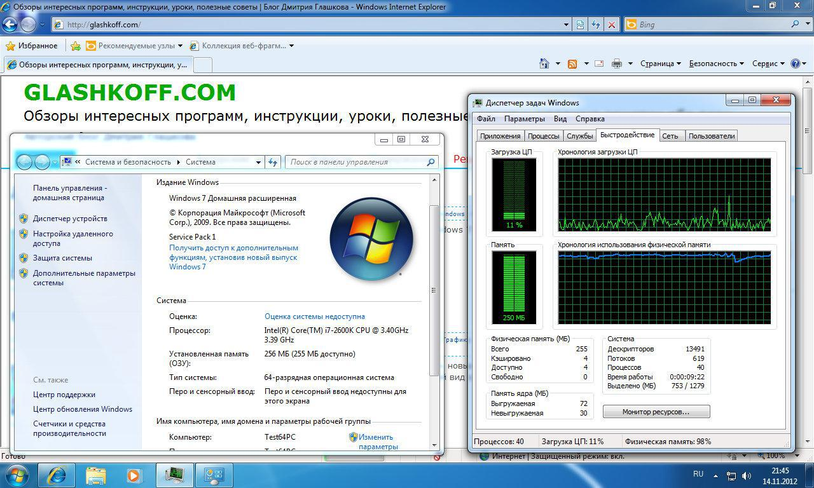

RAM нужна процессору для быстрого доступа к данным, что жесткий диск никак обеспечить не может. Поэтому программа при запуске загружается в оперативную память — только так компьютер может делать вычисления, гоняя данные к процессору из оперативной памяти и обратно.
В Windows запущенные программы физически могут располагаться не только «в платах оперативной памяти», но и на жестком диске в файле pagefile.sys. Этот файл называется «файлом подкачки» или «свопом» (от англ. swap).
Идея такова: если программа занимает много памяти, ее часть выгружается на жесткий диск в файл подкачки, освобождая «жизненное пространство» для других программ, а в случае надобности данные загружаются обратно в оперативную память.
Проблема заключается в том, что разница в скорости между оперативной памяти и жестким диском огромна. Наглядно это можно продемонстрировать так:
Проведу аналогию с лекарствами для снятия симптомов — они не лечат причину, только облегчают симптомы. Если человек болеет гриппом, избавление от насморка не вылечит его. Если компьютер тормозит и свободной памяти мало — он тормозит не из-за занятой памяти, но из-за чересчур ресурсоемкой программы или, например, перегрева.
Все оптимизаторы обязательно показывают размер свободного места в оперативной памяти. Причем зачастую с красными буквами и предупреждениями о том, что это негативно сказывается на скорости компьютера. Что, вообще-то, неправда. Если программе нужна вся оперативная память — значит, это требуется для дела (расчетов) и работать быстро она будет только в том случае, если ей дадут места столько, сколько попросит.
Типичный пример программ, требующих большие объемы ОЗУ — игры. Если игре требуется 2 гигабайта оперативной памяти — с этим ничего поделать нельзя. Без требуемого объема RAM играть будет проблематично из-за низкой частоты кадров — игра будет тормозить из-за того, что часть данных будет располагаться на медленном файле подкачки. Оптимизаторы оперативной памяти создают такой же негативный эффект — после освобождения памяти программам выделяется памяти меньше, чем им того требуется, из-за чего опять-таки начинаются «тормоза».
Замечание №1: Я не утверждаю, что частота кадров в играх напрямую зависит от объема оперативной памяти. Установив больше оперативной памяти в компьютер, удастся повысить производительность только в тех программах, где действительно важен объем ОЗУ без оглядки на другие более важные параметры: частота процессора, характеристики видеокарты, частота оперативной памяти, скорость жесткого диска и т.д.
Замечание №2: С программами случаются ошибки под общим названием «утечка памяти«, когда программа беспричинно «разрастается» и занимает всю память без надобности, но в таком случае надо требовать от разработчиков этой программы исправления ошибки, а не освобождать память оптимизаторами.
Как работают оптимизаторы памяти
Программы оптимизации памяти (названия у них могут быть разные — SuperRAM, FreeMemory, Memory Management SuperProMegaEdition и т.п.) могут освобождать память несколькими способами, но все они завязаны на принципе обмана Менеджера памяти Windows:
Итог всегда один: программы начинают тормозить, зато циферка свободного места в оперативной памяти зеленого цвета и программа оптимизации памяти говорит, что все хорошо. В итоге пользователь радуется, открывает окно со свой любимой программой и… ждет. Потому что его любимая программа начинает сильно тормозить. Так будет до тех пор, пока программа не вернет «себя» в оперативную память из файла подкачки. В итоге оперативная память снова заполняется, индикатор свободного места снова сообщает о занятости памяти, пользователь злится, запускает очистку памяти и все происходит по второму (третьему, пятому, десятому) кругу.
Обратного эффекта — чтобы программа заняла всю оперативную память якобы для быстрой работы — добиться не удастся. Слово «якобы» я употребил потому, что в идеальном случае (когда памяти достаточно) программы берут столько памяти, сколько им нужно и мешать этому процессу нельзя. Вмешаетесь в процесс — получите тормоза, вызванные частым обращением к файлу подкачки.
Еще один печальный момент: оптимизаторы памяти не могут выгрузить из оперативной памяти ненужные программы. Их «ненужность» определяем мы сами, в компьютере все устроено иначе. В файл подкачки выгружаются все программы без разбора.
Вывод №1: освобождение оперативной памяти оптимизаторами идет только во вред и снижает производительность.
Вывод №2: нельзя судить о скорости работы программы по тому, сколько места она занимает в оперативной памяти.
Вывод №3: если программа занимает много места в
оперативной памяти, значит — она оперирует большими объемами данных.
Помочь ей «думать» быстрее можно только увеличив объем оперативной
памяти, т.е. поставив в компьютер побольше плат ОЗУ. Но это не поможет,
если остальные характеристики ПК не соответствуют требованиям.
Самый очевидный способ повысить производительность компьютера, который может сделать каждый вот прямо сейчас — закрыть ненужные программы.
Второй, требующий денежных вложений — установить побольше планок (плат) оперативной памяти, чтобы программы «чувствовали себя более вольготно» и работали шустрее. Других способов ускорения компьютера, непосредственно связанных с оперативной памятью, нет.
Еще раз повторюсь: оптимизаторы памяти — бред с целью заработать деньги на доверчивых пользователях. Такой же глупостью является и подстройка «скрытых настроек памяти» в Windows, так как там все уже настроено наиболее оптимально после тестирования на большом количестве компьютеров. Специфичные моменты бывают, но к домашним компьютерам это не относится.
На форумах я часто вижу возмущенные крики (цитирую): «Поставил Windows 7 (8, 10), посмотрел Диспетчер задач, а там говорится, что занято полтора гигабайта или вся оперативная память! Windows 7 (8, 10) жрет очень много памяти!»
На самом деле все обстоит совсем не так и причин возмущаться нет. Совсем наоборот: в современных операционных системах свободная память отводится под кэш. Это происходит преимущественно благодаря функции SuperFetch. Благодаря кэшу программы запускаются быстрее, так как вместо обращения к жесткому диску данные загружаются из оперативной памяти (см. картинку выше, разница в скорости работы жесткого диска и ОЗУ написана жирным шрифтом). Если какой-то программе понадобиться больше оперативной памяти — кэш моментально сократит свой размер, уступив ей место. Подробнее об этом написано на Хабрахабре.
Выводы:
Также существует миф, что при использовании Windows Vista, 7, 8 и 10, кэш мешает программам. Якобы «когда программе нужно больше оперативной памяти, оказывается, что она забита кэшем, возникают тормоза». На самом деле это неправда. Кэш улетучивается мгновенно и программе сразу становится доступен нужный объем оперативной памяти.
Тоже довольно распространенные, в некотором роде вредные, советы. Об этом есть хорошая статья на Хабре: Файл подкачки Windows. Приведу наиболее важные выводы той лекции с добавлениями из личного опыта:
В файле подкачки pagefile.sys может храниться разнообразная информация конфиденциального характера — например, картинки из недавно открытых в браузере страниц. Это нормальный процесс, обусловленный особенностями работы программ в Windows. При желании можно включить очистку файла подкачки при выключении компьютера. Однако производительности этот твик никоим образом не прибавит, наоборот — серьезно замедлит выключение и перезагрузку компьютера.
Если вы не работаете с конфиденциальными данными, не включайте очистку pagefile.sys.
Интернет буквально завален рассуждениями пользователей о том, почему в битной Windows доступно 3,5 Гб оперативно памяти вместо, например, установленных 4 Гб. Было придумано множество теорий, мифов и легенд. Например, считают, что это ограничение, сделанное Microsoft, которое можно снять. Это отчасти правда — принудительное ограничение действительно есть. Только снять его корректно нельзя. Это обусловлено тем, что в 32-разрядных системах драйвера и программы могут нестабильно работать при использовании системой больше четырех гигабайт оперативной памяти. Для 64-битных Windows драйвера тщательнее тестируют, вышеупомянутого ограничения там нет.
Но не все так просто. Windows 7 Начальная (Starter) (и ее аналог у Vista) не видит больше 2 Гб оперативной памяти. Это тоже ограничение, только не по причине нестабильно работающего софта. Дело в том, что Windows 7 Начальная распространяется исключительно на маломощных нетбуках, по факту практически бесплатно, поэтому необходимо было дистанцировать ее от более дорогих изданий: Домашней базовой, Домашней Расширенной, Максимальной и т.д. Часть ограничений Windows 7 Starter можно снять, но только не ограничение на два гигабайта оперативной памяти.
Что касается остальных 32-битных изданий Windows XP, Vista, 7 и Windows 8/10: на практике пользователю доступно еще меньше — 3,5 Гб. Все дело в том, что драйвера тоже имеют свои адреса, которые лишают программы Windows доступа к части памяти в 512 мегабайт. Существует патч, позволяющий «задвинуть» такие адреса за пределы четырех гигабайт, чтобы система стала использовать все 4 Гб оперативной памяти, но это практически не имеет смысла:
Какой смысл от доступности дополнительных 512 Мб оперативной памяти, если система станет нестабильной? Может, стоит поступить проще и наконец-то поставить 64-битную Windows?
То, что «видно» 4 Гб оперативной памяти, не значит, что ее можно эффективно использовать. Проблема в том, что 32-битная Windows не может грамотно выделить процессу (программе) более двух гигабайт физической оперативной памяти. Об этом многие забывают, и зря. Неважно, сколько оперативной памяти в компьютере, если программе нельзя дать больше 2 Гб ОЗУ. Пример: если пользователь работает в 32-битной Windows с Photoshop на компьютере с 4 Гб оперативной памяти, графический редактор сможет задействовать всего лишь два гигабайта максимум, остальные данные скинет в файл подкачки и будет тормозить. С играми то же самое.
На самом деле, только в 64-битной операционной системе программы могут задействовать весь потенциал оперативной памяти объемом больше двух гигабайт. И то не все, а только рассчитанные на использование больше 2 Гб ОЗУ. Ситуацию опять-таки можно исправить с помощью соответствующих патчей в 32-битной Windows, но это работает далеко не со всеми программами. Повторюсь: только 64-битная Windows и 64-битные программы, запущенные в ней — единственный выход задействовать весь потенциал большого объема ОЗУ.
Между тем, с серверными версиями Windows ситуация иная: там доступны
гораздо большие объемы оперативной памяти даже в 32-битных версиях ОС.
Как говорится, «у страха глаза велики». На самом деле разница между Windows обеих разрядностей не так существенна, как кажется. Например, 64-битная Windows 7 может работать даже на компьютере с 256 Мб ОЗУ, хотя тормозить будет нещадно (как и 32-битная версия):

Потребление памяти Windows 7 обеих разрядностей
Обе Windows были установлены в одинаковые виртуальные машины с 2 Гб ОЗУ в каждой. Из программ установлены только VMWare Tools (использовалась пробная версия виртуальной машины VMWare). В 32-битной Windows 7 было выделено 606 Мб, в 64-битной — 766. Выделенная память — это вообще вся занятая программами и системой виртуальная память (в ОЗУ и файле подкачки). Занятой оперативной памяти будет меньше, в зависимости от запущенных программ.
У вас на свежеустановленной системе могут быть несколько другие значения, потому что системы могут быть разных изданий, с разными драйверами и т.п. Но итог всегда примерно одинаков:
Если обратиться к официальной странице с системными требованиями Windows 7 и Windows 8, то можно увидеть, что для 32-битной Windows 7/8 требуется компьютер с 1 Гб оперативной памяти, а для 64-битной — 2 Гб минимум. Действительно, если использовать 64-битную Windows 7/8 на компьютере с 1 Гб ОЗУ, свободной памяти останется мало, что снизит производительность компьютера из-за явной нехватки оперативной памяти. В масштабах двух гигабайт потеря 0,15 гигабайта уже будет малозаметна, зато начнут проявляться преимущества 64-битной системы и 64-битных программ.
Вывод: устанавливать 32-битную Windows 7/8/10 есть какой-то смысл только на компьютере с ОЗУ меньшим, чем 2 Гб, и то — сейчас этого объёма ОЗУ недостаточно, поэтому выбор разрядности не будет основной проблемой. На компьютере с количеством оперативной памяти более 2 Гб (или равном) ничего не мешает установке 64-битной Windows 7/8/10.
О преимуществах 64-битной версии Windows 7/8/10 рассказано выше, так что рекомендую поскорее переходить на нее. Точнее — на Windows 10, потому что у старших ОС окончание срока поддержки не за горами, они скоро перестанут получать обновления и будут более уязвимы для вредоносных программ.
Здесь уже Microsoft сама внесла путаницу во времена выхода Висты, рассказывая на своем официальном сайте о том, что с помощью ReadyBoost можно решить проблему с нехваткой оперативной памяти по принципу «вставил флешку и расширил объем ОЗУ». На самом деле это не так. При работающей технологии ReadyBoost на флешке создается специальный файл, куда копируются наиболее часто используемые файлы. Благодаря этому некоторые программы запускаются быстрее, что частично устраняет проблему «подвисаний» компьютера, но, к сожалению, не повышает производительность системы в целом и тем более не увеличивает объем оперативной памяти. ReadyBoost позволяет частично решить проблемы, связанные с чтением медленного жесткого диска, и только.
Судя по комментариям, этот момент понимают не все: файл подкачки — не оперативная память. Даже на SSD. Даже на SSD, который быстрый NVMe — без разницы.
Цель существования pagefile.sys — не дать закрыться программам, которым не хватает физической оперативной памяти. Это — единственная задача, которую решает данный «механизм». Изменение размера файла подкачки влияет на то, при нехватке какого объёма ОЗУ запущенный софт начнёт закрываться. Это как аварийный водосброс, не позволяющий дамбе прорваться.
Производительность ПК изменением размера swap-файла вы не повысите. Вот вообще никак. Если у вас не хватает ОЗУ — добавляйте её. Если добавить невозможно — меняйте компьютер. Размер файла подкачки в контексте увеличения производительности обсуждать бессмысленно.